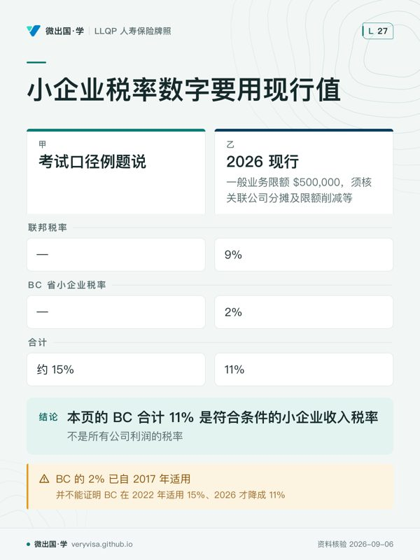

核实日期：2026-09-06｜考纲位置：Life c2（分析可用产品，30%），sub-component 2.1，兼顾 c1（评估需求）的关键人保额估算方法；考试口径单独用一整章讲「企业寿险」，本页与 ch07（寿险与税）互补——ACB/CDA 的计算细节与算例在 ch07 已经讲过，本页只讲这些机制在企业场景里具体怎么用。 复核周期：本页含联邦《所得税法》与联邦公司税率两类现行数字，至少按年度复核（下次 2027-01-31）；数字来源见文末「来源」。
这一章要回答的，是三个温哥华本地小老板迟早会问到的问题：「我们几个合伙人里走了一个，剩下的人怎么把股份买回来、钱从哪来？」「厂里那个谁都替代不了的老师傅万一出事，公司怎么撑过招人培训的那几个月？」「我一个人开公司，退休规划里这张保单该我个人买还是公司买？」 这三个问题背后分别对应买卖协议（buy-sell agreement）、关键人保险（key person insurance）、以及公司持有寿险（corporate-owned life insurance）三套机制，三者共用同一个核心工具——寿险死亡给付免税这条规则（ch07 已讲）——但触发场景、谁持有保单、谁最终受益完全不同。读完这一页你应该能做到：给出一家多股东公司该选交叉持有还是公司赎回的判断依据；估算一份关键人保额该报多大；向企业主客户解释公司持有寿险身故金进公司账户后，哪部分能免税发出去、哪部分不能。
ℹ️
这一章的数字几乎全部是联邦层面的，省级变量包括公司及合伙责任、公司所得税与"配偶/同居伴侣是否必须在买卖协议上签字"这类家庭财产法条款——本页不展开（属家庭法/信托遗产范畴），聚焦寿险机制本身。真正需要双口径对照的是考试口径 2022 年数字 vs 2026 现行数字，尤其是终身资本利得豁免（LCGE）——这是本模块证据链最完整的一处"考试口径数字已确认过期"案例，第二节详细展开。
一、制度设计与底层逻辑：企业为什么要为"人"买保险
企业买寿险，保护的从来不是那个人本身，而是企业因为失去这个人而必然发生的财务损失。考试口径把身故对企业的冲击拆成五类，但真正决定要不要买保险、买多少的，是其中三类可以用钱量化的冲击：
技能损失（loss of skills）：一个关键人身故，企业的产量、质量、客户信心都可能下滑，而找到并培养出同等水平的替代者需要时间和真金白银——这段"空窗期"的成本，正是关键人保险要覆盖的缺口。
债权人催收（creditor demands）：多数商业贷款是随时可催收贷款（demand loan）——银行没有义务等到约定还款日才要钱，贷方可按约提出还款要求，但须满足通知等适用条件；即使借款人未违约也可能被催收，不能把 demand 理解为没有任何通知便立刻执行。这条机制常被低估：很多企业主以为贷款有固定还款期限，实际上银行的"随时可催收"条款让关键人身故的冲击直接从"经营问题"升级成"流动性危机"。
资本利得税（capital gains tax）：ITA s.70(5) 对资本财产一般规定死亡前按公允市值视同处置，配偶及符合条件的农渔业等有不同展期规则，企业股权如果这些年大幅增值，执行人可能被迫卖掉部分股权来缴这笔税——这也是本章第二节要展开的 LCGE 机制存在的理由。
这三类冲击，法律后果各不相同但共享同一条制度逻辑：企业组织形式决定了冲击有多深。独资企业（sole proprietorship）在法律上与业主是同一个实体，业主身故时企业本身没有独立的调整后成本基础（ACB）可以单独处置或继承，企业资产直接随业主遗产一并视同处置——冲击最直接、最难缓冲。合伙企业（partnership）的合伙权益本身有 ACB、可以买卖继承，但BC 普通合伙人的一般债务责任依 Partnership Act s.11 为共同责任，死亡后遗产对未清偿债务还受法定顺位限制；违法行为等的连带责任另见 s.14。有限合伙需至少一名一般合伙人，LLP 又有独立保护与例外，不能把所有合伙人写成同一责任。公司（corporation）是独立法律实体，股东原则上不对公司债务负责（除非本人提供了个人担保，或作为董事对公司代扣未缴的税款负连带责任），股权有独立 ACB，股东身故视同处置这份股权（而不是公司本身的资产）——因此要先区分买的是公司股份还是合伙权益；买卖协议同样可用于合伙，RBC 官方说明也同时使用 partners 与 shareholders。
可保利益在企业场景怎么成立：BC 法一般在合同生效时要求可保利益，但 s.45(2) 对团体保险或被保险人书面同意设有例外，核心判断标准是"投保人会不会因为被保险人身故而遭受实际的经济损失"。在企业场景里，这条规则以几种具体关系成立：企业对其关键员工/关键股东有可保利益（因为身故会造成考试口径列出的那几类财务损失）；债权人对债务人有可保利益（保障额度仍须经财务核保，不把特定债权额写成所有个人寿险的法定绝对上限）；生意合伙人之间互相有可保利益（因为一方身故会触发买卖协议下的付款义务，也会造成合伙权益结构的实质冲击）。这条规则的实务意义在于：保额不能凭空定得很高再去找理由，必须能证明这份保额与企业实际可能遭受的经济损失之间存在合理对应关系，保司核保时会要求提交财务资料佐证。
企业购买寿险的四类需求
| 需求类型 | 触发场景 | 谁持有保单 / 谁受益 | 一句机制 |
|---|---|---|---|
| 关键人保障（key person） | 核心员工/股东身故导致营收下滑、招聘替代成本 | 企业持有并作受益人 | 免税身故金直接进企业账户，弥补收入损失与替代者招募培训开支 |
| 买卖协议融资（buy-sell funding） | 股东/合伙人身故，需要有钱买回其股权 | 视结构而定（幸存股东本人 / 公司），见下表 | 保证有买家、保证价格、保证资金——没有资金支持的买卖协议只是一纸空文 |
| 债务保障（creditor protection） | 关键人身故触发银行对随时可催收贷款抽贷 | 企业或贷款人作受益人（视贷款合同要求） | 银行常要求转让关键人保单作贷款担保，扣除须满足 ITA s.20(1)(e.2)，不能仅凭有贷款就扣全部保费 |
| 员工福利与高管补充保障（split-dollar） | 企业想为核心员工提供有吸引力的永久险福利但不想全额承担成本 | 企业与员工分享同一张保单的不同权益 | 面额部分与账户价值部分分属不同权益人，按公允市场价值分摊保费（无专门税则，靠 CRA 行政观点） |
二、2026 现行政策与数字：终身资本利得豁免（LCGE）与小企业税率
2.1 终身资本利得豁免（LCGE）：考试口径数字已确认过期（三态表）
企业主处置合格公司股权时能用来抵消资本利得的终身资本利得豁免，是本模块证据链最完整的一处"考试口径数字过期"案例——这条已在 ch07 讲过一次，这里聚焦它在企业股权处置这个具体场景下怎么用：
| 口径 | 数值 | 生效/统计口径 |
|---|---|---|
| 考试口径 2022 说 | 加拿大自控私人公司（CCPC）合格股份 $913,630（按 50% 计算为 $456,815；考试口径个别表格末位差异须与实际算式区分）；农渔业财产另算固定 $1,000,000 | 考试口径 §2.1.10（税务原理）；§8.2.3.2（人寿保险） |
| 2026 现行 | 上限 $1,275,000；一半计入率对应扣除上限 $637,500 | CRA 年度指数化表的 2026 栏（canada.ca），不可用 2025 的 $1,250,000 代替 |
以谁为准：企业主处置合格 CCPC 股份时，实务按 $1,275,000 计算；考试口径数字若出现在题库旧题里，仅作历史对照。
考试口径例题重算（沿用考试口径"资本利得 $2,200,000、扣 LCGE 后按 50% 计入率、45% 边际税率"这套计算模型，只换 LCGE 数值，人物与具体数字为教学示范；假设全部符合资格、额度未用、无其他限制，未计 AMT，不能作为实际税额报价）：
| 步骤 | 用 2022 年 LCGE $913,630 | 用 2026 现行 LCGE $1,275,000 |
|---|---|---|
| 资本利得 | $2,200,000 | $2,200,000 |
| 扣除 LCGE 后余额 | $2,200,000 − $913,630 ＝ $1,286,370 | $2,200,000 − $1,275,000 ＝ $925,000 |
| 应税资本利得（50% 计入率） | $1,286,370 × 50% ＝ $643,185 | $925,000 × 50% ＝ $462,500 |
| 按 45% 边际税率计税 | $643,185 × 45% ＝ $289,433 | $462,500 × 45% ＝ $208,125 |
同一笔资本利得，只因为 LCGE 从 2022 年的考试口径数字换成 2026 年现行数字，税负就少了 $81,308——这不是一道"背哪个数字"的题，是一条值得对企业主客户专门讲一遍的现行政策变化：如果客户几年前从别处听说过 LCGE 是"九十几万"，现在应该更正为"一百二十七万五千"。
⚠️
LCGE 须核具体资产资格
普通经营合伙权益通常不适用；符合 ITA s.110.6 定义的家族农渔业合伙权益则可能适用。CCPC 身份本身也不足以证明股份为 QSBC（laws-lois.justice.gc.ca）。
资本利得计入率：现行 ITA s.38(a) 的一般计入率仍为一半，另有合格捐赠等例外。2024 提案可作历史背景，不能作为证明现行法的唯一来源（laws-lois.justice.gc.ca）。
2.2 小企业税率差：考试口径例题的机制长青，数字要用现行值
跨模块的税务原理考试口径与本模块共用一个案例母题：个体户按个人边际税率纳税，公司按更低的小企业税率纳税，税率差本身就是企业主选择以公司形式经营、并进而考虑"公司持有寿险"这条路径的经济动因之一。
| 口径 | 数值 |
|---|---|
| 考试口径例题（跨模块 A&S ch05 Willy 案例）说 | 个体户边际税率约 45% vs 公司小企业税率约 15%，$50,000 年结余在公司架构下多出约 $15,000 可留存投资 |
| 2026 现行 | 符合小企业扣除条件的 CCPC：联邦税率 9%（一般业务限额 $500,000，须核关联公司分摊及限额削减等）+ BC 省小企业税率 2% ＝ 合计 11%（CRA 官方页直引："the net tax rate is 9%"，同页省级税率表列 BC 2%） |
以谁为准：本页的 BC 合计 11% 是符合条件的小企业收入税率，不是所有公司利润的税率。考试口径用约 15% 示范，并不能证明 BC 在 2022 年适用 15%、2026 才降成 11%；BC 的 2% 已自 2017 年适用。比较个人和公司持有寿险时，还须计入个人提款税、业务限额、资金是否留在公司及保单后续分配。公司当期税率较低，不能单凭这一点判定整个策略永久节税。
2.3 关键人保额怎么估算：三种常见方法
考试口径本身没有给出一个法定公式，保额最终由保司核保时结合财务资料判断是否合理，但行业里通常用三种思路互相印证：
收入/薪酬倍数法：按该关键人年薪酬的若干倍数估算（本页不设统一倍数，须以具体保险人的财务核保指南为准），逻辑是"需要多少年的替代成本缓冲"。利润贡献法：估算该关键人个人经手或主导的业务对企业毛利润的贡献份额，乘以预计需要多长时间才能培养出等效替代者。替代与债务保障法：直接加总——招聘猎头费、新人培训期间的双薪成本、以及该关键人个人担保或与其信用直接挂钩的企业贷款余额。三种方法算出的数字通常不会完全一致，代理人应解释三种估计覆盖的损失、时间范围及可能重叠，选择有财务依据的申请额度，而不是只取中间数，因为核保员最终会要求企业提交财务资料佐证保额的合理性，凭空报出一个远超企业实际规模的保额会被核保打回或大幅调降。
三、实务流程：三种资金结构怎么落地
3.1 买卖协议为什么必须有资金支持
一份买卖协议（buy-sell agreement）本身只是一纸约定谁买、谁卖、什么价钱，如果没有资金来源，这份协议在真正需要执行的那一刻就是空话——考试口径把这个道理拆成四个必须同时成立的条件：保证有买家（guaranteed buyer）——不用临时找人接盘；保证价格（guaranteed value）——事先约定好定价方式，避免家属与幸存股东就价格反复拉扯；强制出售（mandatory sale）——身故一方的遗产必须按约定卖出，幸存方也必须按约定买入，双方都没有反悔空间；保证资金（guaranteed funding）——这是四项里最关键的一项，寿险正是解决这一项的最可靠工具，因为身故金到账的时间点恰好与需要付款的时间点吻合，不依赖企业当时的现金流状况。
3.2 买卖协议三种资金结构对照

| 结构 | 谁持有保单 | 谁受益、股权怎么流转 | 税务后果一句话 |
|---|---|---|---|
| 交叉持有（criss-cross / cross-purchase） | 各股东互相为对方投保 | 身故金直接进幸存股东个人账户，幸存股东用这笔钱直接买入身故者股份；总股数不变，幸存者持股比例上升 | 保费不可抵扣（非用于贷款/投资目的），但身故金全额免税进入幸存股东手中，且幸存股东买入股份的价款成为其新股份的成本基础，日后自己处置这些股份时可以扣减这笔成本——两股东时最简单，股东数量一多，需要的保单数会按排列组合式增长（三人需 6 张，四人需 12 张），管理成本迅速上升 |
| 公司赎回（corporate redemption / entity purchase / share redemption） | 公司统一持有全部保单，公司是受益人 | 公司收到免税身故金→记入 CDA→公司直接用现金赎回并注销身故股东的股份；总股数减少，幸存股东持股比例上升（效果与交叉持有相同，机制不同：买方是公司而不是其他股东） | 公司可每位股东各持一张保单，n 人通常 n 张；若用联合首身故产品，应另核第一宗赔付后的剩余保障，管理简单；但幸存股东拿不到基础提升（step-up in basis）——他们原有股份的成本基础不变，日后自己处置股份时资本利得会算得更高，这是相对交叉持有的税务劣势 |
| 混合法（本票法 promissory note + 公司赎回的组合） | 公司持有全部保单并作受益人（形式同公司赎回） | 公司收到免税身故金→记入 CDA→公司向幸存股东派发免税资本红利（而不是直接拿钱注销股份）→幸存股东用这笔钱（常配合一张本票先行支付）买入身故者股份→幸存股东以所收资本红利偿还自己向遗产开出的本票 | 兼具两者优势：管理上像公司赎回（通常每位股东一张，相比逐对互保减少数量），税务上像交叉持有（幸存股东实际掏钱买入股份，能取得成本基础的提升）——考试口径称之为"企业保单资助交叉购买"，是本章税务设计最精巧的一种结构 |
选哪一种，主要看股东人数与健康年龄差异：两个股东时交叉持有最简单直接；股东数量三个以上，交叉持有需要的保单数量会迅速变得难以管理，公司统一持有（赎回法或混合法）更省事；如果股东之间年龄或健康状况差异很大，交叉持有会导致保费负担严重不对等（下面第七节详细讲这个陷阱），这也是股东数量或健康差异大的企业更倾向于选择公司持有保单的现实原因。
3.3 公司持有保单与资本红利账户（CDA）：机制一句话，算例见 ch07
公司作为受益人收到的寿险身故金，第一步和个人受益人完全一样——全额免税进入公司账户，这条免税定性不因受益人是公司而改变（ch07 第一节已详细讲过法律根据）。但企业场景多一步：这笔免税身故金里，对符合条件的私人公司，该笔给付扣适用 ACB 等后的金额可增加 CDA；完成有效资本红利选择后，可向加拿大税务居民股东按规则免税分配；等于 ACB 那部分虽然公司拿到手上同样不用交税，但不能计入 CDA，本身不增加 CDA，后续分配还须看公司整体 CDA 余额及其他合法支付性质。定期险通常没有 CSV，但仍可能有非零 ACB；定期与永久险都须用实际 ACB 等数据计算，不能把无 CSV 当成近乎全额入 CDA 的保证——这正是企业主决定用定期险还是永久险做买卖协议融资时，除了保费高低之外，另一条真正影响税务效率的考量（ACB 具体怎么算、CDA 完整算例，见 ch07 第三节 3.5）。
企业向银行申请贷款时，如果银行要求转让一份关键人保单作为担保，这笔转让属于担保转让（collateral assignment）而不是绝对转让——符合 exempt 条件时保内增长继续递延，不触发处置（ch07 第三节 3.1 已讲过这条区分），若属于受限金融机构在该借款中要求的抵押，且贷款利息满足法定扣除条件，可在当年保费与 NCPI 较小者中扣除合理对应期间欠款的部分；不能只取 NCPI，更不能把比例倒写成保额除贷款额。
四、2026 市场：谁在卖、怎么卖
本节只写回源核实过的公司与产品线名，产品概览只支持所列范围，未核合同细节不作推荐依据。
关键人保障与买卖协议融资是不同商业需求，可分别选择定期或永久寿险配置；官网分开介绍两种用途，不能证明必须是两种互斥的专用产品。Canada Life 官网设有专门的商业解决方案（business solutions）栏目讲解关键人保险，明确其定义为"企业为对公司成功至关重要的业主或员工投保的人寿/健康险"，覆盖身故、重疾、伤残三种触发。RBC Insurance 官网把"Key Person Insurance"与"Buy Sell Insurance"设为两个独立的产品页面：关键人险页面强调"帮助企业从核心人员的身故或伤残中恢复"；买卖协议险页面原文直接印证了上一节的机制判断——"最简单的方案是由其他合伙人/股东持有保单……这就是交叉购买融资方案；另一种做法是由企业持有保单"，并明确指出企业持有（entity purchase）在股东超过两人时通常更受青睐，因为能减少需要签发的保单数量——这与考试口径"股东数量多时公司持有更高效"的判断逐字吻合。CRA 官方页确认企业核对 CDA 余额的正式渠道是登录 My Business Account 申请核验，或提交 T2054 表（《所得税法》s.83(2) 资本红利选择表）——这是考试口径完全没提到的一步实务动作：考试口径讲清楚了 CDA 是什么，没讲企业怎么把它变成真正能发出去的免税股利。
它们分别对应考试口径的哪个概念：Canada Life 的关键人险栏目对应 8.3「关键人寿险」；RBC 的两个独立产品页对应 8.4.1「交叉购买 vs 公司赎回」的市场分工现状；CRA 的 T2054 申报流程对应 8.4.4.1「CDA 的作用」在真实操作中的落地一步。
BMO 的具体企业方案名称未取得完整官方产品资料，本页不将二手转述作为当前在售证明。比较方案时，以保险人提供的现行合同及演示为依据。
🔧
三方协作是常态，不是可选项
企业持有寿险与买卖协议融资几乎从不是代理人一个人就能完成的工作——设计 split-dollar 安排的公允价值分摊、算清楚 CDA 能免税发多少、起草买卖协议本身的法律条款，通常需要代理人、公司税务会计师、企业律师三方协作，考试口径本身也明确提示"税务处理复杂，应转介税务/遗产规划专家"。这是 LLQP 持牌人从"卖个人寿险"进阶到"商业保险规划"这个细分市场的关键技能分界点。
五、历史变革：从"无协议就是一场家族赌博"到"三份保单锁死流程"
在买卖协议与配套保险成为标准做法之前，一个没有留下任何安排的公司股东身故，会把公司直接推入一场充满不确定性的博弈：股权按遗嘱或无遗嘱继承规则落到继承人手上，而这些继承人未必愿意参与经营、未必与幸存股东合得来，甚至可能狮子大开口漫天要价——考试口径用一个继承人有偷窃/毒品史、狮子大开口要 $1,200,000 的极端案例，展示了"无协议"状态下家族企业传承可能滑向的最坏局面。即使继承人本身没有恶意，"公平不等于平分"这条难题依然存在：一个孩子接手企业、另一个孩子毫无兴趣，企业本身的价值往往远超家庭其他资产，如果不做专门规划，不接班的孩子很容易被认为"吃亏了"，这也是为什么代理人在处理企业传承时，通常会建议用一份指定给不接班子女的寿险，在不拆分或出售企业资产的前提下，给他们补上一份大致等值的身故给付。
买卖协议加上寿险资金支持，把这场原本充满变数的博弈，提前压缩成一套确定的流程：谁买、什么价、钱从哪来，全部在健康的时候就锁定好，身故只是触发一个既定程序，而不是打开一场谈判。资本红利账户机制的存在，进一步把这套流程从"企业勉强凑钱买回股份"升级为"企业能把免税身故金真正干净地转手给股东，而不必先绕道缴一轮公司税再发股利"——这是"公司持有保单"这条路径相对"股东各自持有保单"在制度设计上多出来的一层税务效率，也是为什么随着买卖协议规划的普及，公司持有型结构（赎回法、混合法）逐渐成为多股东企业更常见的选择，而不再是"交叉持有"一统天下。
六、案例
案例一：列治文餐馆合伙人——两人交叉持有，三人以上就该换结构
列治文一家餐馆最初由两名合伙人共同经营，各自为对方投保一张永久险做买卖协议融资（交叉持有），机制简单：任何一方身故，另一方直接拿到免税身故金买下对方股份，总股数不变，持股比例从 50/50 变成 100/0。三年后餐馆扩张，又引入了第三位合伙股东。这时如果继续沿用交叉持有结构，三人之间需要互相投保共 6 张保单，且未来只要再增加合伙人，保单数量会以更快的速度膨胀——这正是考试口径反复强调的"交叉持有适合两人、股东一多就该换公司赎回或混合法"的现实印证。代理人建议这三位合伙人把结构改为公司统一持有并作受益人，只需要三张保单（每人一张），管理和保费缴纳都集中在公司这一层，避免了保单数量失控的问题。
案例二：素里建筑公司的关键工程师——保额怎么估出来的
素里一家中型建筑公司有一位负责结构工程审图与项目验收的资深工程师，公司几乎所有大型合同的按期交付都依赖他。代理人用三种方法交叉估算保额：收入倍数法——他年薪 $180,000，按本例假设的 6 倍估算得约 $1,080,000；利润贡献法——假设公司年毛利润 $1,800,000，他主导项目贡献 35%，替代期 18 个月，未计额外调整的贡献缺口为 $1,800,000 × 35% × 1.5 ＝ $945,000；替代与债务保障法——猎头费加培训期双薪成本约 $250,000，加上公司一笔以他个人信用担保、余额约 $600,000 的随时可催收贷款，合计约 $850,000。三个方法算出的数字落在 $850,000 到 $1,080,000 之间，公司最终选择投保 $1,000,000 的关键人险，并向核保员提交了近三年财务报表与该工程师负责项目的合同清单作为保额合理性的佐证。
案例三：一人公司——保单该自己买还是让公司买
一位在温哥华独立执业的顾问，业务以自己名下的一人公司（有限公司）形式运营。他在规划自己的寿险时面临一个常见问题：这张保单该以个人身份购买，还是让公司作为投保人和受益人购买？如果是纯粹的个人身故保障需求（比如给家人留一笔钱），个人持有更直接，因为身故金原本就免税，不需要绕道通过公司再分配一次；但如果这位顾问同时希望利用公司较低的小企业税率（现行联邦 9% + BC 2% ＝ 11%，对比他个人边际税率可能高出许多）来更省钱地缴纳保费，公司持有可能更划算——因为用税后个人收入缴保费，实际成本比用税率更低的公司资金缴保费要高。但公司持有也有代价：身故金进入公司后，只有超出 ACB 的部分能免税转入 CDA 按公司及股东适用规则分配；若被保险人正是该业主，他已死亡，收取后续分配的应是股份持有人或其遗产等，而不是亡者本人，多出这一层税务复杂度。这个案例没有唯一正确答案——代理人的价值恰恰在于把两条路径的现金流与税务后果都算清楚，让客户自己在"更省保费成本"和"更简单干净"之间做取舍。
七、考试陷阱与双口径清单
- 交叉购买协议（cross-purchase）与公司赎回（share redemption / entity purchase）实现的持股比例效果相同，机制完全不同——前者是幸存股东买入、总股数不变；后者是公司注销股份、总股数减少。题干如果问"谁是买方"，两者答案不同（其他股东 vs 公司本身），不能因为最终持股比例一样就当成同一回事。
- 公司赎回法下，幸存股东拿不到成本基础的提升（step-up in basis）——这是相对交叉持有最容易被忽略的税务劣势，题干常见的干扰项会暗示"两种方法税务后果完全等价"，这是错的：交叉持有下幸存股东买入股份的价款会成为新的成本基础，公司赎回法下原有股份成本基础不变。
- 交叉互保（criss-cross）看似公平（同样保额），保费负担可能严重不对等——在其他条件相同时，年轻健康股东替年长或健康较差者投保，所付保费通常高于反向安排，因为定价看被保险人的风险，同样的保额、不同的经济负担，这正是股东年龄/健康差异大的企业更倾向于选择公司统一持有的现实原因，题干把这条包装成"交叉互保就是公平方案"是常见陷阱。
- LCGE 不能只看「公司」或「合伙」标签——核 QSBC 股份或合格农渔业财产定义、处置年度及个人剩余额度；合格农渔业合伙是不能遗漏的例外。
- 只有超出 ACB 的身故金部分才能进入 CDA，不是全部免税进公司的钱都能进 CDA——两类保单都用实际 ACB 等数据计算；有非零 ACB 的定期险不能假定全额增加 CDA，也不能忽略公司整体账户及分配手续，题干常见陷阱是暗示"公司收到的免税身故金全部都能免税发给股东"。
- 随时可催收贷款（demand loan）不需要等到约定还款日才能被银行要求全额还清——催收权须依贷款条款及适用通知条件，不能把经济状况恶化当成可无通知即时执行的授权，题干如果暗示"贷款有固定期限，企业还有时间缓冲"，这与随时可催收贷款的性质矛盾。
- 买卖协议的"保证资金"这一条，是四项条件里最容易被跳过、也是最关键的一项——很多人以为写清楚"谁买、什么价"这份协议就完整了，但没有资金支持（通常靠寿险），协议在真正需要执行时可能只是一纸空文，题干如果只列举"有买家、有定价方式"就判断买卖协议已经完备，遗漏了资金来源这一环。
- 一人公司的保单持有方式没有唯一正确答案——它取决于客户的具体需求（单纯身故保障 vs 利用公司低税率省保费）与愿意接受的税务复杂度，题干如果暗示"个人业主的保单一律该由公司持有"或反过来"一律该个人持有"，都是把一个需要具体分析的问题简化成了错误的定论。
术语双语表
| en | zh | 一句机制 |
|---|---|---|
| key person / key employee | 关键人/关键员工 | 对企业存续至关重要、身故会造成量化损失的个人 |
| demand loan | 随时可催收贷款 | 无固定还款期，贷方可随时要求全额还款 |
| sole proprietorship | 独资企业 | 与业主法律上是同一实体，无独立 ACB 可单独处置继承 |
| partnership | 合伙企业 | 合伙权益有 ACB 可买卖继承，普通合伙、有限合伙与 LLP 的责任不同，须按组织形式和债务性质判断 |
| corporation | 公司 | 独立法律实体，股东原则上不对公司债务负责，股权有独立 ACB |
| Canadian-Controlled Private Corporation (CCPC) | 加拿大自控私人公司 | 须符合 ITA 的加拿大控制私人公司定义；CCPC 身份本身不保证股份符合 QSBC 或持有人可用 LCGE |
| lifetime capital gains exemption (LCGE) | 终身资本利得豁免 | 抵消处置合格 CCPC 股份/农渔业财产的资本利得，现行 $1,275,000 |
| split-dollar arrangement | 分成保单安排 | 企业与员工分享同一张永久险不同权益，按公允市场价值分摊保费 |
| buy-sell agreement | 买卖协议 | 约定谁买/什么价/如何筹资，处理股东身故后的股权归属 |
| cross-purchase agreement | 交叉购买协议 | 幸存股东互相买入亡故者股份，总股数不变，可取得成本基础提升 |
| share redemption / entity purchase | 股份赎回/公司购买 | 公司自己赎回并注销亡故股东股份，总股数减少，管理更简单但无基础提升 |
| hybrid method (promissory note) | 混合法（本票法） | 公司持有保单但用免税资本红利资助幸存股东实际买入股份，兼具两者优势 |
| criss-cross insurance | 交叉互保 | 各方互相投保对方，保费不可抵扣但身故金免税，年龄健康差异大时负担不均 |
| business-owned insurance | 企业自持保单 | 企业统一投保覆盖成本差异、便于监督缴费、股东多时更高效 |
| capital dividend account (CDA) | 资本红利账户 | 记录公司可免税分配的收入，寿险身故给付超 ACB 部分计入 |
| insurable interest | 可保利益 | 通常在生效时判断；BC 对团体及被保险人书面同意设例外，保额另经财务核保 |
| small business deduction | 小企业扣除 | 首 $500,000 主动经营收入适用更低公司税率，现行联邦 9% + BC 2% |
| adjusted cost basis (ACB) | 调整后成本基础 | 决定处置应税利得大小，也决定身故金有多少能进 CDA（详见 ch07） |
| guaranteed funding | 保证资金 | 买卖协议四要素中最关键的一项，寿险是最可靠的资金来源 |
| collateral assignment | 担保转让 | 用保单做贷款抵押，不触发处置，符合 exempt 条件时保内增长继续递延 |
| Form T2054 | T2054 表 | 企业向 CRA 申报资本红利选择（《所得税法》s.83(2)）的正式表格 |
来源
- Canada Revenue Agency, "Line 25400 — Capital gains deduction / LCGE"（复用 ch07 CRA，仅作2025旧年度来源；2026改用canada.ca）
- Canada Life, "How key person insurance can help your business"（Canada Life）
- RBC Insurance, "Key Person Insurance"（RBC Insurance）
- RBC Insurance, "Buy Sell Insurance"（RBC Insurance）
- Canada Revenue Agency, "Capital dividend accounts"（CRA）
- BMO Insurance 相关产品概念，二手源转述，官网未核（BMO Insurance（二手源交叉：cardinal…）
- Canada Revenue Agency, "Corporation tax rates"（CRA）
本页知识卡
不看正文也能拿到这一节的核心内容：先看导读，再看图。点图放大，左右翻页。
- 先看先看末行左右两个落点，它直接展示换口径后的差距。
- 易漏CCPC 身份本身也不足以证明股份为 QSBC；资产资格仍须核。
- 下一步去练习，用同样算法检查旧题里的数字是否要更新。

- 先看先看合计，再向上拆联邦与 BC，避免把旧约数当成现行分项。
- 易漏旧例题只给公司小企业税率约数，不能据此拆出当年的联邦和 BC 分项。
- 下一步去讲解核对适用条件，再带公司收入归类问题找持牌专业人士。